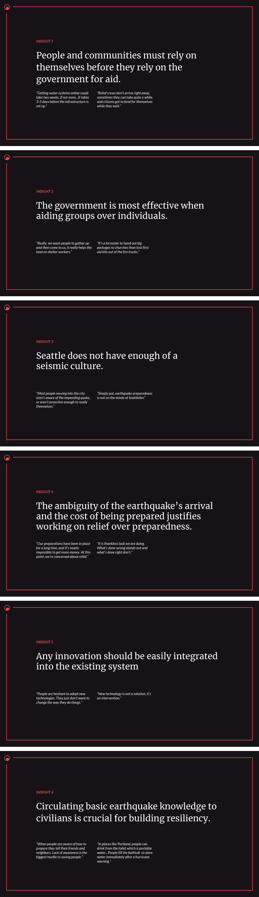
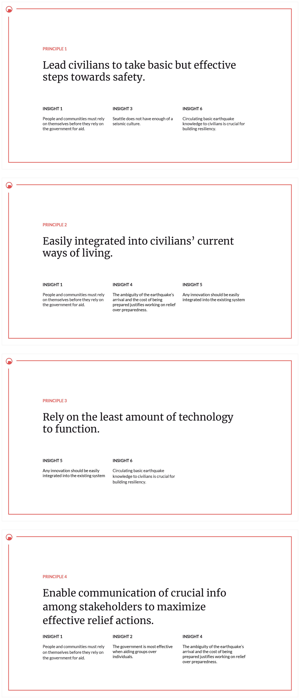
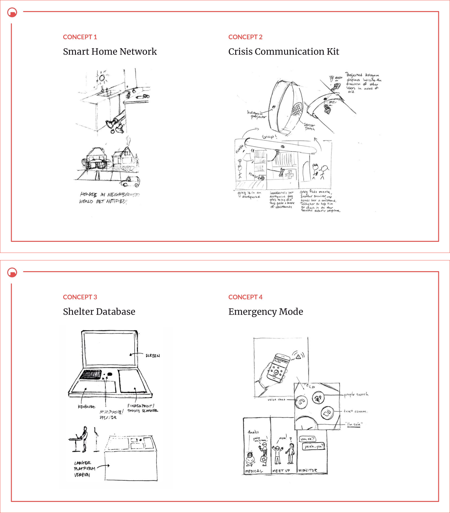

/ Really Big One
2017
Inspired by the reality of the situation in Seattle explained through this article, this project explores the imminent megathrust earthquake in the Cascadia Subduction Zone.
This project was done in collaboration with 3 others.
This project was done in collaboration with 3 others.
After much consideration of potential research topics and questions we decided to focus on the Cascadia Subduction Zone with the intent of exploring this research question:
"How might we preserve human life in Seattle in the aftermath of a megathrust earthquake?"
"How might we preserve human life in Seattle in the aftermath of a megathrust earthquake?"
The goal was to find an area in this space that truly needed improvement, we didn't want to create an abstract problem and lead our research into an useless direction for the sake of technology.
A reserach plan was made once we figured out a real problem, what we were looking for and how we would find it.
A reserach plan was made once we figured out a real problem, what we were looking for and how we would find it.
We then interviewed a broad range of people so we could get a larger view into problems that needed to be solved and to get a better understanding of how and why the current systems are the way they are.
Apart from collecting data from structured interviews with certain specialists, we also conducted secondary research and compiled the most important points.
Apart from collecting data from structured interviews with certain specialists, we also conducted secondary research and compiled the most important points.
For synthesis, we transcribed the data into themes and then extracted particular insights from the themes. These insights were generated from multiple direct quotes from people working within the problem space.
•
People and communities must rely on themselves before they rely on the government for aid.
•
The government is most effective when aiding groups over individuals.
•
Seattle does not have enough of a seismic culture.
•
The ambiguity of the earthquake's arrival and the cost of being prepared justifies working on relief over preparedness.
•
Any innovation should be easily integrated into the existing system.
•
Circulating basic earthquake knowledge to civilians is crucial for building resiliency.
From the insights, we had to further define what was necessary from our findings. This process and the research pointed to the design principles which fundamentally revolved around helping civilians as opposed to government policymakers or first responders. Our design principles directed our further steps to bring about a solution to the problems we understood.
•
Lead civilians to take basic but effective steps towards safety.
•
Easily integrated into civilians' current ways of living.
•
Rely on the least amount of technology to function.
•
Enable communication of crucial info among stakeholders to maximize effective relief actions.
Our concepts revolved around our design principles and our given restriction to work in the field of biometrics.
On further developing one of the concepts, we tested out a prototype. It was a behavioral/wizard-of-oz prototype, and our focus was on people interacting with the prototype and their organic reactions to it.
We then created an MVP to showcase what we conceptualized and created an 'advertisement' to tell the story of how the concept would be used in a disaster scenario.
On further developing one of the concepts, we tested out a prototype. It was a behavioral/wizard-of-oz prototype, and our focus was on people interacting with the prototype and their organic reactions to it.
We then created an MVP to showcase what we conceptualized and created an 'advertisement' to tell the story of how the concept would be used in a disaster scenario.
/




